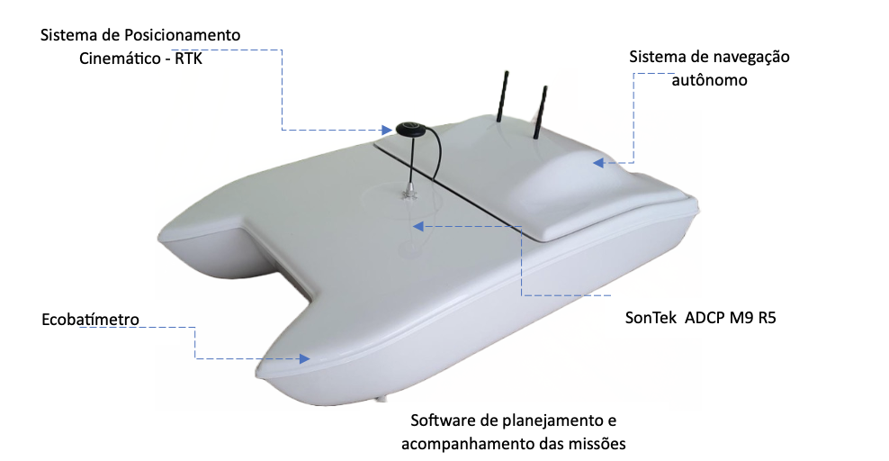

Barcos
Explorador I

O Explorador I é um pequeno drone (barco) aquático que possui diversas características para realização de levantamento hidrométrico e coleta de água.
O Explorador I é uma plataforma aquática de superfície que se destaca por sua eficiência em levantamentos batimétricos e medições de vazão com ADCPs. Desenvolvido em colaboração com universidades e uma empresa de engenharia ambiental, o Explorador I integra sensores hidrométricos para realização de levantamentos em diversos ambientes aquáticos.
Além disso, sendo de fabricação inteiramente nacional, o Explorador I pode ser facilmente customizado para atender necessidades específicas, permitindo a incorporação de múltiplos sensores para coleta de dados. Sua operação também é simplificada devido às suas dimensões e peso reduzidos, sendo facilmente manuseado por um número reduzido de técnicos com poucas horas de treinamento.
Dessa forma, o Explorador I é uma ferramenta valiosa para realização de levantamentos hidrométricos e coleta de dados em ambientes aquáticos, possibilitando uma maior compreensão e monitoramento desses ecossistemas.
Entre as suas funcionalidades, é possível destacar a medição de profundidade pontual, batimetria e velocidade do fluxo da água. Além disso, o Explorador I também é capaz de realizar o sensoriamento remoto e coleta de água para verificação da qualidade da mesma.
Componentes do Sistema
Para tornar tudo isso possível, o Explorador I conta com componentes importantes como o Sistema de Posicionamento Cinemático - GPS PPK, que garante uma precisão ainda maior nas medições realizadas, e o Sistema de navegação autônomo, que permite um controle mais preciso e seguro do drone aquático.
A doca para SonTek ADCP M9 e R5 é outro componente essencial do Explorador I, pois é responsável pela coleta de dados sobre a velocidade do fluxo da água e sua direção. Já o ecobatímetro é utilizado para medição da profundidade pontual e batimetria.
Por fim, o Explorador I também conta com um software de planejamento e acompanhamento das missões por telemetria, que garante uma gestão mais eficiente das operações realizadas.
Com dimensões de comprimento de 114 cm e peso total de 12,7 KG, o Explorador I possui uma autonomia de 8 horas a 2m/s e baterias Li-ion de 24 VDC e 10 Amp. Sua propulsão é feita por 2 x 1KW Brushless e possui um sistema de motores diferencial para garantir a direção correta do drone aquático. A comunicação é realizada através de um rádio link 900 MHz e a Sistema de Posicionamento Cinemático - RTK Ecobatímetro Software de planejamento e acompanhamento das missões Sistema de navegação autônomo SonTek ADCP M9 R5 navegação pode ser controlada tanto de forma remota manual como autônoma. O Explorador I é capaz de operar em condições ambientais de temperatura do ar entre 5 oC a 40 oC.